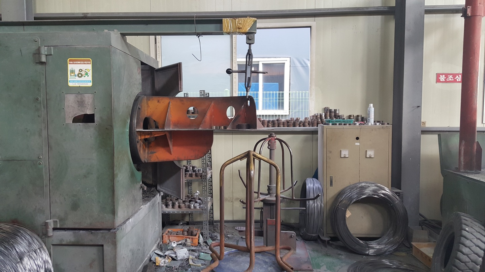
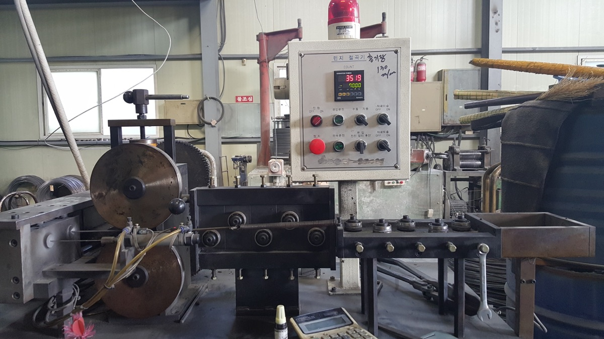
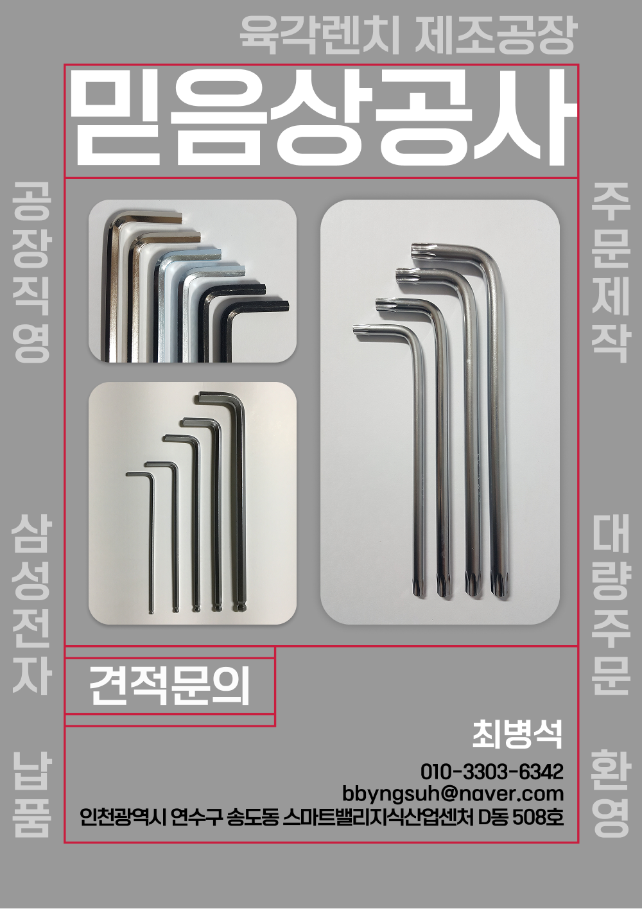

{kind=link}
{kind=link}
{kind=link}
육각 렌치
L렌치 / 육각L렌치 / 6각렌치
육각 홈 볼트의 체결과 분해에 사용하는 L형 렌치입니다.
- 형상
- L형, 육각 단면
- 규격
- 대변 치수와 양쪽 길이 확인
- 재질·마감
- 요청 사양별 제작 가능 여부 확인
- 수량·납기
- 대량 주문 가능, 조건 별도 협의
주문 제작 및 대량 구매 가능
필요한 품목과 규격을 확인하고,
제작부터 납품까지 믿음상공사에 문의하세요.
도면이나 제품 사진이 있다면 함께 보내주세요.

형상과 용도를 살펴보고 필요한 품목을 선택하세요.
L렌치 / 육각L렌치 / 6각렌치
육각 홈 볼트의 체결과 분해에 사용하는 L형 렌치입니다.
별렌치 / 별 모양 체결부용
별 모양 홈 체결부에 사용하는 렌치입니다. 체결부 형상을 함께 확인합니다.
볼렌치 / 볼 포인트 렌치
볼 포인트 끝단을 가진 육각 렌치입니다. 작업 공간과 체결 조건을 함께 알려주세요.
사진은 제품 형상 참고용입니다. 공급 규격, 재질, 표면 처리와 납품 조건은 견적 상담 후 확정합니다.
정확한 수치를 모르셔도 괜찮습니다.
현재 사용하는 제품 사진부터 보내주세요.

공장 소개
육각 렌치, 별 렌치, 볼 렌치를 취급하는 제조업체입니다. 필요한 규격의 주문 제작과 사업장 단위 대량 구매를 상담합니다.
같은 렌치라도 사용하는 볼트와 작업 조건이 다릅니다. 품목과 치수, 수량을 먼저 확인하고 제작 가능 여부와 납품 조건을 안내합니다.

필요한 정보를 함께 확인한 뒤 제작 조건을 정합니다.
품목, 수량, 희망 납기를 알려주세요. 도면이나 사진이 있다면 이메일로 보내주세요.
치수, 재질, 표면 처리 등 요청하신 조건의 제작 가능 여부를 확인합니다.
확인된 사양과 수량을 기준으로 견적 및 납품 일정을 협의합니다.
합의된 주문 조건에 따라 진행합니다. 납품 방법은 상담 시 확인해주세요.
주문 제작 상담이 가능합니다. 품목, 치수, 길이와 필요한 재질 및 표면 처리를 알려주세요. 도면이나 제품 사진을 함께 보내주시면 제작 가능 여부를 확인하는 데 도움이 됩니다.
최소 주문 수량과 납기는 품목과 제작 사양에 따라 확인이 필요합니다. 필요한 수량과 희망 납품일을 알려주시면 상담 후 조건을 안내합니다.
네. 사용 중인 렌치나 체결할 볼트의 사진, 알고 계신 치수와 용도를 보내주세요. 확인이 필요한 항목을 함께 정리해드립니다. 제품 사진만으로 재질이나 정확한 규격을 확정하지는 않습니다.
주문 제작 · 대량 구매
품목과 수량만 정해져 있어도 상담을 시작할 수 있습니다.
010-3303-6342bbyngsuh@naver.com도면과 제품 사진은 이메일에 첨부해주세요.
{kind=link}
{kind=link}
{kind=link}
{kind=link}
{kind=link}
{kind=link}
{kind=link}